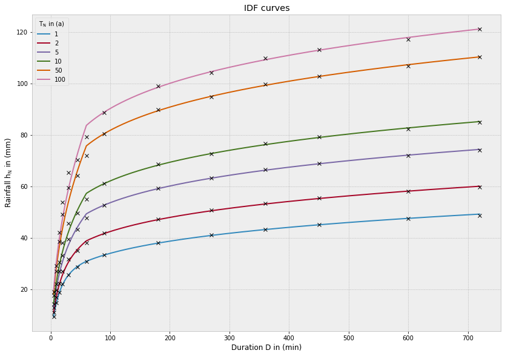
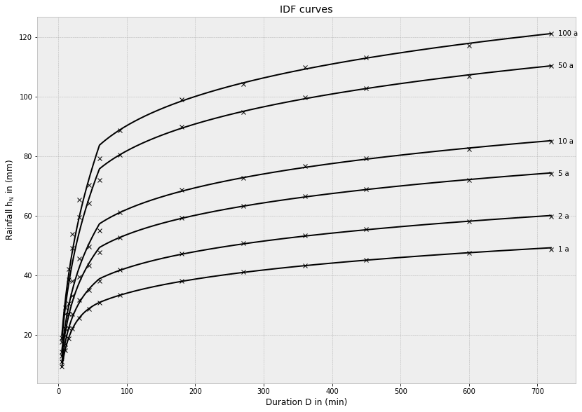

[1]:
from idf_analysis.idf_class import IntensityDurationFrequencyAnalyse
from idf_analysis.definitions import *
import pandas as pd
from os import path
%matplotlib inline
import matplotlib.pyplot as plt
plt.style.use('bmh')
Intensity Duration Frequency Analyse¶
Parameter¶
series_kind:
SERIES.PARTIAL = Partielle Serie (partial duration series, PDS) (peak over threshold, POT)
SERIES.ANNUAL = Jährliche Serie (annual maximum series, AMS)
worksheet:
METHOD.KOSTRA: - DWA-A 531 - KOSTRA - empfohlen - Stützstellen: 60 min und 12 h
METHOD.CONVECTIVE_ADVECTIVE: - DWA-A 531 - Unterscheidung in überwiegend konvektiv und advektiv verursachte Starkregen - Stützstellen: 3 h und 24 h
METHOD.ATV: - ATV-A 121 - Stützstellen: 3 h und 48 h
extended_durations = Inkludiert die Dauerstufen [0.75d, 1d, 2d, 3d, 4d, 5d, 6d] in der Analyse (in d=Tage)
Standardmäßig berechnete Dauerstufen [5m, 10m, 15m, 20m, 30m, 45m, 60m, 1.5h, 3h, 4.5h, 6h, 7.5h, 10h, 12h]
[2]:
idf = IntensityDurationFrequencyAnalyse(series_kind=SERIES.PARTIAL, worksheet=METHOD.KOSTRA, extended_durations=True)
I used the rain-time-series from ehyd.gv.at with the ID 112086 (Graz-Andritz) created with the ehyd-tools package.
[3]:
data = pd.read_parquet('ehyd_112086.parquet')
[4]:
output_directory = 'ehyd_112086_idf_data'
[5]:
data.head()
[5]:
| precipitation | |
|---|---|
| datetime | |
| 2007-09-18 11:09:00 | 0.1 |
| 2007-09-18 11:12:00 | 0.1 |
| 2007-09-18 11:13:00 | 0.1 |
| 2007-09-18 11:14:00 | 0.1 |
| 2007-09-18 11:20:00 | 0.1 |
[6]:
data.tail()
[6]:
| precipitation | |
|---|---|
| datetime | |
| 2016-12-28 22:24:00 | 0.006 |
| 2016-12-28 22:25:00 | 0.092 |
| 2016-12-28 22:26:00 | 0.006 |
| 2016-12-28 22:45:00 | 0.090 |
| 2016-12-28 22:46:00 | 0.006 |
[7]:
idf.set_series(data['precipitation'])
Bei jeder neuen Berechnung werden Zwischenergebnisse erstellt, welche nur abhängig von der gewählten Serie series_kind und der angegebenen/benötigten Dauerstufen sind. Dieser Vorgang dauert einige Sekunden. Auserdem enthalten diese Zwischenergebnisse die Parameter, die zur Berechnung der Regenhöhe und Regenspende benötigt werden. Hier sind bereist die Berechnungsverfahren und Stückpunkte laut dem gewählten worksheet berücksichtigt.
Um Zeit zu sparen, gibt es die Möglichkeit, die Parameter zwischenzuspeichern und bei erneutem Aufrufen des Skripts werden diese Parameter nicht mehr berechnet, sondern aus der Datei gelesen.
[8]:
idf.auto_save_parameters(path.join(output_directory, 'idf_parameters.yaml'))
Abgerufen können diese Zwischenergebnisse mit:
[9]:
idf.parameters
[9]:
<idf_analysis.idf_parameters.IdfParameters at 0x1a767557310>
Berechnungen¶
[10]:
idf.depth_of_rainfall(duration=15, return_period=1)
[10]:
19.031596336052708
[11]:
print('Resultierende Regenhöhe h_N(T_n={t:0.1f}a, D={d:0.1f}min) = {h:0.2f} mm'
''.format(t=1, d=15, h=idf.depth_of_rainfall(15, 1)))
Resultierende Regenhöhe h_N(T_n=1.0a, D=15.0min) = 19.03 mm
[12]:
idf.rain_flow_rate(duration=15, return_period=1)
[12]:
211.46218151169674
[13]:
print('Resultierende Regenspende r_N(T_n={t:0.1f}a, D={d:0.1f}min) = {r:0.2f} L/(s*ha)'
''.format(t=1, d=15, r=idf.rain_flow_rate(15, 1)))
Resultierende Regenspende r_N(T_n=1.0a, D=15.0min) = 211.46 L/(s*ha)
[14]:
idf.r_720_1()
[14]:
11.410836729727
[15]:
idf.get_return_period(height_of_rainfall=10, duration=15)
[15]:
0.1430180144131331
[16]:
idf.get_duration(height_of_rainfall=10, return_period=1)
[16]:
5.433080747189968
[17]:
idf.result_table().round(2)
[17]:
| 1 | 2 | 3 | 5 | 10 | 20 | 25 | 30 | 50 | 75 | 100 | |
|---|---|---|---|---|---|---|---|---|---|---|---|
| 5 | 9.39 | 10.97 | 11.89 | 13.04 | 14.61 | 16.19 | 16.69 | 17.11 | 18.26 | 19.18 | 19.83 |
| 10 | 15.15 | 17.62 | 19.06 | 20.88 | 23.35 | 25.82 | 26.62 | 27.27 | 29.09 | 30.54 | 31.56 |
| 15 | 19.03 | 22.25 | 24.13 | 26.51 | 29.72 | 32.94 | 33.98 | 34.83 | 37.20 | 39.08 | 40.42 |
| 20 | 21.83 | 25.71 | 27.99 | 30.85 | 34.73 | 38.62 | 39.87 | 40.89 | 43.75 | 46.02 | 47.63 |
| 30 | 25.60 | 30.66 | 33.62 | 37.35 | 42.41 | 47.47 | 49.10 | 50.43 | 54.16 | 57.12 | 59.22 |
| 45 | 28.92 | 35.51 | 39.37 | 44.23 | 50.83 | 57.42 | 59.54 | 61.28 | 66.14 | 69.99 | 72.73 |
| 60 | 30.93 | 38.89 | 43.54 | 49.40 | 57.36 | 65.31 | 67.88 | 69.97 | 75.83 | 80.49 | 83.79 |
| 90 | 33.37 | 41.74 | 46.64 | 52.80 | 61.17 | 69.54 | 72.23 | 74.43 | 80.60 | 85.49 | 88.96 |
| 120 | 35.22 | 43.90 | 48.97 | 55.36 | 64.03 | 72.70 | 75.49 | 77.78 | 84.17 | 89.24 | 92.84 |
| 180 | 38.01 | 47.13 | 52.46 | 59.18 | 68.30 | 77.42 | 80.36 | 82.76 | 89.48 | 94.81 | 98.60 |
| 240 | 40.12 | 49.57 | 55.10 | 62.06 | 71.51 | 80.97 | 84.01 | 86.49 | 93.46 | 98.99 | 102.91 |
| 360 | 43.29 | 53.23 | 59.04 | 66.37 | 76.31 | 86.25 | 89.45 | 92.06 | 99.39 | 105.20 | 109.33 |
| 540 | 46.71 | 57.16 | 63.27 | 70.98 | 81.43 | 91.89 | 95.25 | 98.00 | 105.71 | 111.82 | 116.16 |
| 720 | 49.29 | 60.13 | 66.47 | 74.45 | 85.29 | 96.12 | 99.61 | 102.46 | 110.44 | 116.78 | 121.28 |
| 1080 | 54.41 | 64.97 | 71.15 | 78.94 | 89.50 | 100.06 | 103.46 | 106.24 | 114.02 | 120.20 | 124.58 |
| 1440 | 58.02 | 67.72 | 73.39 | 80.54 | 90.24 | 99.93 | 103.05 | 105.61 | 112.75 | 118.42 | 122.45 |
| 2880 | 66.70 | 77.41 | 83.68 | 91.57 | 102.29 | 113.00 | 116.45 | 119.26 | 127.16 | 133.42 | 137.87 |
| 4320 | 71.93 | 85.72 | 93.78 | 103.95 | 117.73 | 131.52 | 135.96 | 139.58 | 149.75 | 157.81 | 163.53 |
| 5760 | 78.95 | 95.65 | 105.42 | 117.72 | 134.43 | 151.13 | 156.50 | 160.89 | 173.20 | 182.97 | 189.90 |
| 7200 | 83.53 | 101.38 | 111.82 | 124.98 | 142.83 | 160.68 | 166.43 | 171.12 | 184.28 | 194.72 | 202.13 |
| 8640 | 85.38 | 104.95 | 116.40 | 130.82 | 150.38 | 169.95 | 176.25 | 181.40 | 195.82 | 207.27 | 215.39 |
[18]:
idf.result_table(add_names=True).round(2)
[18]:
| return period (a) | 1 | 2 | 3 | 5 | 10 | 20 | 25 | 30 | 50 | 75 | 100 |
|---|---|---|---|---|---|---|---|---|---|---|---|
| frequency (1/a) | 1.000 | 0.500 | 0.333 | 0.200 | 0.100 | 0.050 | 0.040 | 0.033 | 0.020 | 0.013 | 0.010 |
| duration (min) | |||||||||||
| 5 | 9.39 | 10.97 | 11.89 | 13.04 | 14.61 | 16.19 | 16.69 | 17.11 | 18.26 | 19.18 | 19.83 |
| 10 | 15.15 | 17.62 | 19.06 | 20.88 | 23.35 | 25.82 | 26.62 | 27.27 | 29.09 | 30.54 | 31.56 |
| 15 | 19.03 | 22.25 | 24.13 | 26.51 | 29.72 | 32.94 | 33.98 | 34.83 | 37.20 | 39.08 | 40.42 |
| 20 | 21.83 | 25.71 | 27.99 | 30.85 | 34.73 | 38.62 | 39.87 | 40.89 | 43.75 | 46.02 | 47.63 |
| 30 | 25.60 | 30.66 | 33.62 | 37.35 | 42.41 | 47.47 | 49.10 | 50.43 | 54.16 | 57.12 | 59.22 |
| 45 | 28.92 | 35.51 | 39.37 | 44.23 | 50.83 | 57.42 | 59.54 | 61.28 | 66.14 | 69.99 | 72.73 |
| 60 | 30.93 | 38.89 | 43.54 | 49.40 | 57.36 | 65.31 | 67.88 | 69.97 | 75.83 | 80.49 | 83.79 |
| 90 | 33.37 | 41.74 | 46.64 | 52.80 | 61.17 | 69.54 | 72.23 | 74.43 | 80.60 | 85.49 | 88.96 |
| 120 | 35.22 | 43.90 | 48.97 | 55.36 | 64.03 | 72.70 | 75.49 | 77.78 | 84.17 | 89.24 | 92.84 |
| 180 | 38.01 | 47.13 | 52.46 | 59.18 | 68.30 | 77.42 | 80.36 | 82.76 | 89.48 | 94.81 | 98.60 |
| 240 | 40.12 | 49.57 | 55.10 | 62.06 | 71.51 | 80.97 | 84.01 | 86.49 | 93.46 | 98.99 | 102.91 |
| 360 | 43.29 | 53.23 | 59.04 | 66.37 | 76.31 | 86.25 | 89.45 | 92.06 | 99.39 | 105.20 | 109.33 |
| 540 | 46.71 | 57.16 | 63.27 | 70.98 | 81.43 | 91.89 | 95.25 | 98.00 | 105.71 | 111.82 | 116.16 |
| 720 | 49.29 | 60.13 | 66.47 | 74.45 | 85.29 | 96.12 | 99.61 | 102.46 | 110.44 | 116.78 | 121.28 |
| 1080 | 54.41 | 64.97 | 71.15 | 78.94 | 89.50 | 100.06 | 103.46 | 106.24 | 114.02 | 120.20 | 124.58 |
| 1440 | 58.02 | 67.72 | 73.39 | 80.54 | 90.24 | 99.93 | 103.05 | 105.61 | 112.75 | 118.42 | 122.45 |
| 2880 | 66.70 | 77.41 | 83.68 | 91.57 | 102.29 | 113.00 | 116.45 | 119.26 | 127.16 | 133.42 | 137.87 |
| 4320 | 71.93 | 85.72 | 93.78 | 103.95 | 117.73 | 131.52 | 135.96 | 139.58 | 149.75 | 157.81 | 163.53 |
| 5760 | 78.95 | 95.65 | 105.42 | 117.72 | 134.43 | 151.13 | 156.50 | 160.89 | 173.20 | 182.97 | 189.90 |
| 7200 | 83.53 | 101.38 | 111.82 | 124.98 | 142.83 | 160.68 | 166.43 | 171.12 | 184.28 | 194.72 | 202.13 |
| 8640 | 85.38 | 104.95 | 116.40 | 130.82 | 150.38 | 169.95 | 176.25 | 181.40 | 195.82 | 207.27 | 215.39 |
To save the table as a csv:
[19]:
idf.result_table(add_names=True).round(2).to_csv(path.join(output_directory, 'idf_table_UNIX.csv'), sep=',', decimal='.', float_format='%0.2f')
[20]:
print(idf.result_table(add_names=True).round(2).to_string())
return period (a) 1 2 3 5 10 20 25 30 50 75 100
frequency (1/a) 1.000 0.500 0.333 0.200 0.100 0.050 0.040 0.033 0.020 0.013 0.010
duration (min)
5 9.39 10.97 11.89 13.04 14.61 16.19 16.69 17.11 18.26 19.18 19.83
10 15.15 17.62 19.06 20.88 23.35 25.82 26.62 27.27 29.09 30.54 31.56
15 19.03 22.25 24.13 26.51 29.72 32.94 33.98 34.83 37.20 39.08 40.42
20 21.83 25.71 27.99 30.85 34.73 38.62 39.87 40.89 43.75 46.02 47.63
30 25.60 30.66 33.62 37.35 42.41 47.47 49.10 50.43 54.16 57.12 59.22
45 28.92 35.51 39.37 44.23 50.83 57.42 59.54 61.28 66.14 69.99 72.73
60 30.93 38.89 43.54 49.40 57.36 65.31 67.88 69.97 75.83 80.49 83.79
90 33.37 41.74 46.64 52.80 61.17 69.54 72.23 74.43 80.60 85.49 88.96
120 35.22 43.90 48.97 55.36 64.03 72.70 75.49 77.78 84.17 89.24 92.84
180 38.01 47.13 52.46 59.18 68.30 77.42 80.36 82.76 89.48 94.81 98.60
240 40.12 49.57 55.10 62.06 71.51 80.97 84.01 86.49 93.46 98.99 102.91
360 43.29 53.23 59.04 66.37 76.31 86.25 89.45 92.06 99.39 105.20 109.33
540 46.71 57.16 63.27 70.98 81.43 91.89 95.25 98.00 105.71 111.82 116.16
720 49.29 60.13 66.47 74.45 85.29 96.12 99.61 102.46 110.44 116.78 121.28
1080 54.41 64.97 71.15 78.94 89.50 100.06 103.46 106.24 114.02 120.20 124.58
1440 58.02 67.72 73.39 80.54 90.24 99.93 103.05 105.61 112.75 118.42 122.45
2880 66.70 77.41 83.68 91.57 102.29 113.00 116.45 119.26 127.16 133.42 137.87
4320 71.93 85.72 93.78 103.95 117.73 131.52 135.96 139.58 149.75 157.81 163.53
5760 78.95 95.65 105.42 117.72 134.43 151.13 156.50 160.89 173.20 182.97 189.90
7200 83.53 101.38 111.82 124.98 142.83 160.68 166.43 171.12 184.28 194.72 202.13
8640 85.38 104.95 116.40 130.82 150.38 169.95 176.25 181.40 195.82 207.27 215.39
To create a color plot of the IDF curves:
[21]:
fig, ax = idf.result_figure(color=True, add_interim=False)

To create a black/white plot of the IDF curves:
[22]:
fig, ax = idf.result_figure(color=False, add_interim=True)
